Engaru
Engaru · Hokkaido
Engaru
Highlighted on the Hokkaido map.
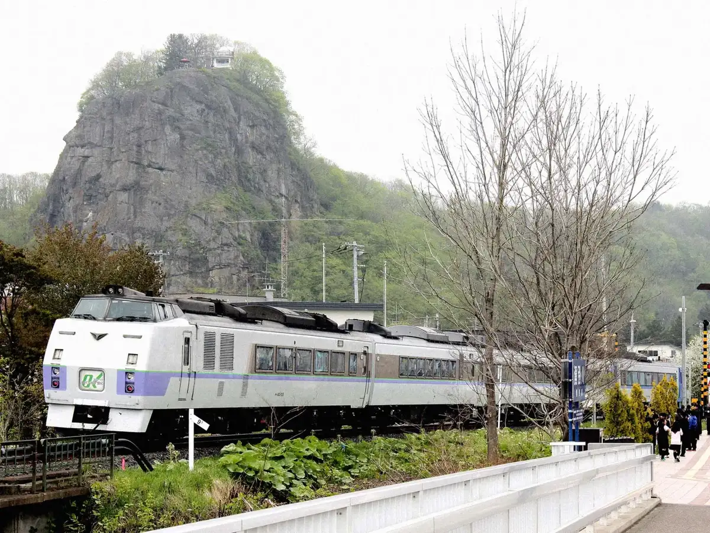
Stay
ホテルサンシャイン
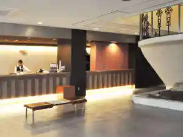
Hoterusanshain
ホテル ノースキング
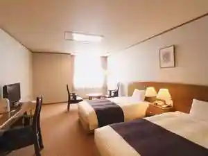
Hoteru Noosukingu
丸瀬布温泉 マウレ山荘 ～北海道遠軽町に佇む北欧風リゾート～
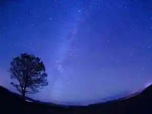
Maruseppu Onsen Maure Sansou ~ Hokkaidou Enkaru Machi Ni Tatazumu Hokuou Kaze Rizooto ~
Dining
いろはにほへと 遠軽店

Irohanihoheto Enkaru Mise
洋風居酒屋サルーテ
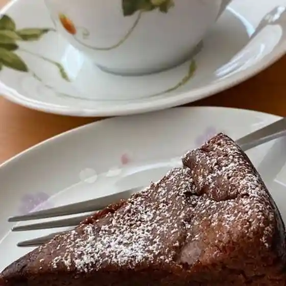
Youfuu Izakaya Saruute
えだ松
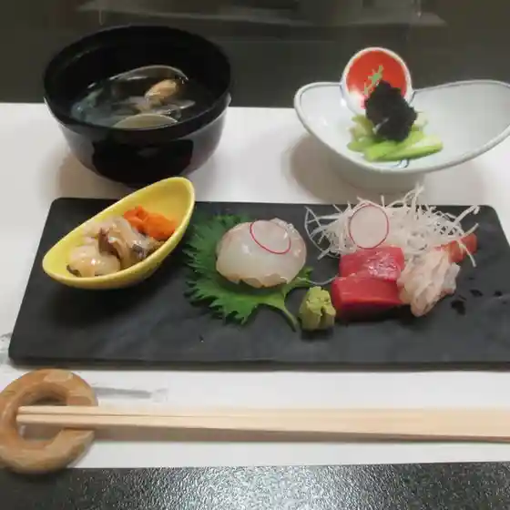
Eda Matsu
Cafe スロー
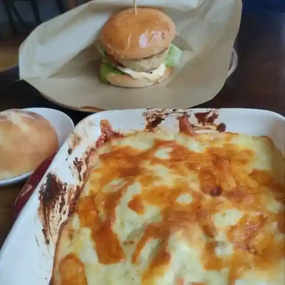
Cafe Suroo
肉のささき
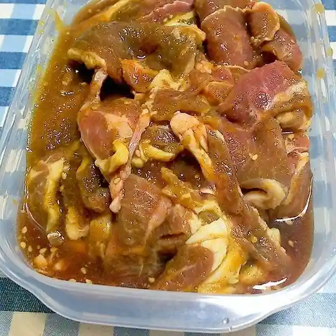
Niku Nosasaki
スープカレー&ネパールカレー ポカラダイニング 遠軽店
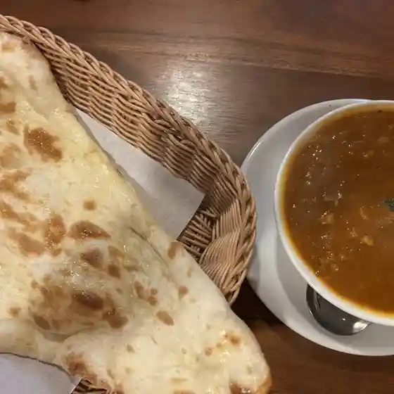
Suupukaree & Nepaarukaree Pokaradainingu Enkaru Mise
森の暮らし
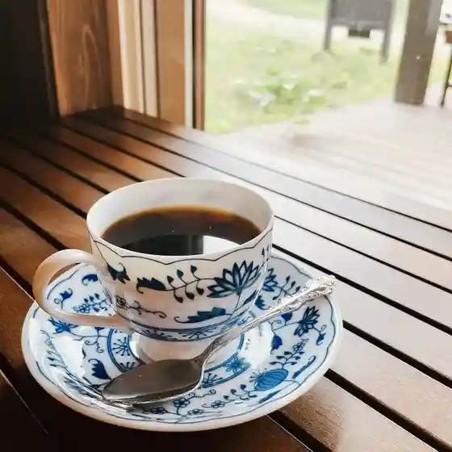
Mori No Kurashi
セトセ温泉ホテル
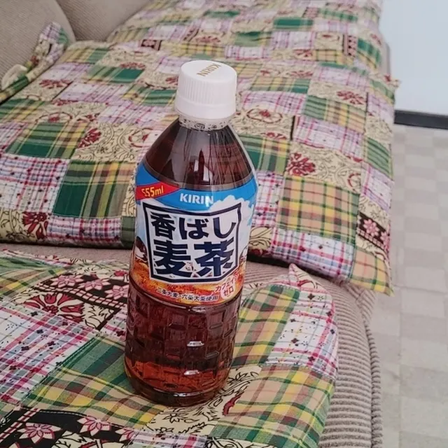
Setose Onsen Hoteru
マギー
Magii
DZマート 遠軽店
Dz Maato Enkaru Mise
テン・フォー
Ten Foo
セブンイレブン 遠軽豊里店
Sebun'Irebun Enkaru Toyosato Mise
寿司のみうら
Sushi Nomiura
ぽっぽ
Poppo
菊地精肉店
Kikuchi Seinikuten
温泉ラーメン
Onsen Raamen
セイコーマート 遠軽西町店
Seikoomaato Enkaru Nishimachi Mise
つぼ八 遠軽店
Tsubo Hachi Enkaru Mise
村上珈琲店
Murakami Koohii Mise
ぼうず
Bouzu
オステリア デッラ ミゼリア
Osuteria Derra Mizeria
政寿し
Masatoshi Shi
酒肴 えんみや
Shukou Enmiya
木楽館
Ki Raku Kan